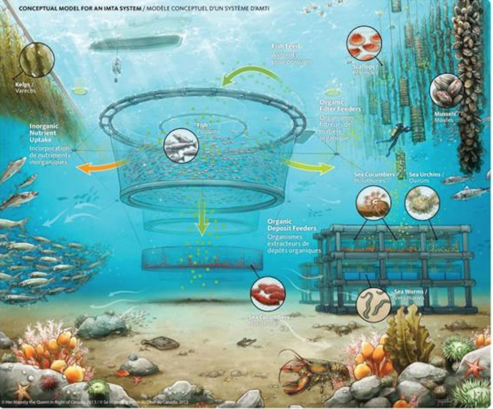

Food source

Ocean Farming for Sustainable Food Production
Ocean farming offers a sustainable solution to global overfishing by providing an alternative source of seafood. This sustainable practice involves a diverse array of marine species, such as finfish, shellfish, seaweed, and algae, which can be used for various culinary and nutritional needs. Overfishing is a pressing global concern, and ocean farming provides an alternative source of seafood by cultivating fish in controlled environments. Sustainable practices in ocean farming include careful site selection, reducing antibiotic use, and managing waste and nutrient runoff. Seaweed farming is an example of a sustainable aspect of ocean farming, as it efficiently sequesters carbon dioxide from the atmosphere without requiring freshwater or arable land. Seaweeds can be used for food, animal feed, biofuels, and industrial applications. As a result, ocean-farmed fish are increasingly raised on sustainable and alternative feeds, reducing the reliance on wild-caught fish as feed ingredients and reducing the overall environmental footprint of fish farming.
Balancing Ecosystem Health and Food Production
Sustainable agriculture practices are essential for maintaining ecosystem health and maximizing crop yields. These practices include crop rotation, organic farming, reducing chemical pesticide and fertilizer use, and agroforestry. Precision agriculture and technology-driven solutions are crucial for minimizing environmental impact. Biodiversity conservation is essential for maintaining the resilience of biodiverse ecosystems, which provide essential services like pollination and natural pest control. Habitat restoration is crucial for preserving natural habitats, such as wetlands and forests, and preventing urban sprawl.
Responsible land use is crucial for preventing urban sprawl and protecting agricultural land, forests, and natural spaces. Water management is crucial for both agriculture and ecosystems, with practices like drip irrigation, rainwater harvesting, and stringent controls on water pollution from agricultural runoff. Sustainable livestock farming can mitigate the environmental impact of livestock farming by promoting rotational grazing, reduced antibiotic usage, and resource management.
Agroecology, an emerging field, combines ecological principles with agricultural practices to create farming systems that harmonize with local ecosystems. Climate change mitigation requires reducing greenhouse gas emissions from agriculture and enhancing resilience to climate change impacts. Education and awareness are key catalysts for change, as it raises awareness about the link between ecosystem health and sustainable food production.
Nurturing Ocean Awareness and Environmental Guardianship
This area is dedicated to increasing ocean awareness and environmental care. It emphasizes numerous steps that individuals and communities may do to help protect and conserve our oceans. These measures include education and outreach, sustainable fishing practices, combating plastic pollution, promoting marine protected areas (MPAs), mitigating climate change, responsible tourism, citizen science, and assisting conservation organizations.
Education and outreach entails conducting extensive programs and workshops to educate people about maritime ecosystems. Ocean movies, interactive websites, and social media campaigns, among other things, provide immersive encounters into the world of the oceans. While plastic pollution is a growing concern, sustainable fishing practices advocate for ocean-friendly seafood choices. Marine protected areas (MPAs) must be supported in order to safeguard marine biodiversity.
Advocating for climate-resilient ocean policies and practices can help ensure that our seas have a climate-smart future. Responsible tourism entails exploring coastal areas responsibly while conserving their natural beauty. Citizen science entails actively participating in marine research and donating to conservation organizations. We can work together to ensure that our oceans have a more sustainable future.
Promoting Sustainable Livelihoods and Empowering Coastal Communities
The coastal region is an important environment for both human and natural communities, but it is under threat from climate change, overfishing, pollution, and habitat loss. To address these challenges, strategies such as Integrated Coastal Zone Management (ICZM), sustainable fisheries management, aquaculture, eco-tourism, coastal protection and resilience, community-based conservation, education, microfinance, small business support, livelihood diversification, scientific research, government and non-governmental organization (NGOs) partnerships, robust policies and regulations, and climate change adaptation can be implemented. Through microfinance, small business support, scientific research, and collaborations, these methods strive to combine economic growth with environmental conservation, promote sustainable practices, and empower coastal communities. We can help safeguard coastal habitats, encourage sustainable practices, and ensure equitable benefit distribution by implementing these initiatives.
Conclusion
Ocean farming, which uses marine species such as finfish, shellfish, seaweed, and algae, presents a sustainable solution to worldwide overfishing. Sustainable practices include site selection, antibiotic reduction, and waste management. Seaweed farming captures CO2, while sustainable agriculture practices preserve ecosystem health and crop production. Climate change, overfishing, pollution, and habitat loss must all be addressed through education, sustainable fishing practices, and empowering coastal communities.